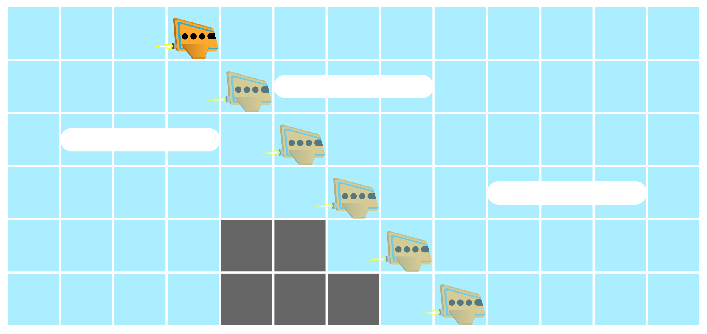

Escrever propriedades é difícil, mas pode ser muito útil para testes
Frameworks de property-based testing (PBT) vão gerar inputs aleatórios* para o programa e, para cada um deles, ver se a propriedade é satisfeita.
*não necessariamente aleatórios. Muitos frameworks vão tentar valores extremos (zero e MAX_INT para inteiros, etc).
Pra quem já fez TEC:
E sobre performance?
Para esse cenário da maratona, testes baseados em propriedades seriam a melhor abordagem na minha avaliação.
Program testing can be used to show the presence of bugs, but never to show their absence!
– Edsger Dijkstra
Verificação garante que não existem bugs!
Mas e se, na hora de implementar o sistema especificado, eu cometer um erro?
Model-Based Testing (MBT) é uma forma de testar se a implementação está de acordo com a especificação.
No contexto do problema da maratona, um exemplo:
Até aqui, já estamos bem fundamentados. A chance de cometermos um erro ao escrever 100 linhas de C++ é baixa. Em sistemas mais realistas, a chance de cometer um erro na implementação é bem maior.
Se quisermos reduzir a chance de erro de implementação, podemos usar MBT:
Alguns métodos formais, como Coq, permitem extração automática da implementação a partir da especificação.
Nosso trabalho 2 será sobre testes baseados em modelos!